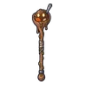

สไลม์ซุปเย็นชืด · ร่างซุปพริก
มอนธาตุพิษ Lv 62–72
เจอที่
| แมพ | โซน | Lv | ภูมิภาค |
|---|---|---|---|
| โรงเตี๊ยมกลางทาง | 62–72 | ดินแดนเหนือ |
ค่าสถานะตามเลเวล
| Lv | HP | ATK | DEF | MDEF | EXP | Job |
|---|---|---|---|---|---|---|
| 62 | 28,458 | 122–183 | 18 | 20 | 120 | 90 |
| 67 | 35,766 | 134–201 | 19 | 22 | 129 | 97 |
| 72 | 43,794 | 147–220 | 21 | 24 | 137 | 103 |
ตีด้วยธาตุไหนดี
แรงขึ้น: —
เบาลง: มืด ×0.5 อมตะ ×0.5 พิษ ×0
วัตถุดิบที่ดรอป
| ของ | โอกาส | |
|---|---|---|
| ซุปเย็นชืดในขวด | 82% | 1 ชิ้น (15% ได้ 2) |
อุปกรณ์ที่ดรอป (1)
| ของ | โอกาส |
|---|---|
 คทาซุปเย็นชืด | 0.24% |
สกิล
แอ่ง (Lv 25+) · แอ่ง (Lv 60+) · ปาตกใส่ (Lv 60+)